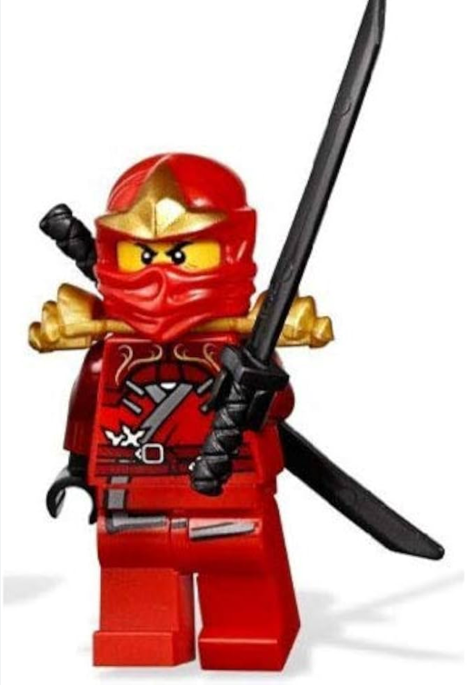

Welcome to the Fintan Fan Page!
Fintan is known for his epic collection of fire-themed LEGO figures. Explore below to see some of his most fiery pieces.
Fire LEGO Figures
Fintan's Favorite Fire Figure
Click the button below to see Fintan's all-time favorite fire LEGO figure!

This is Fintan's favorite LEGO fire figure, known for its intricate design and fiery details!